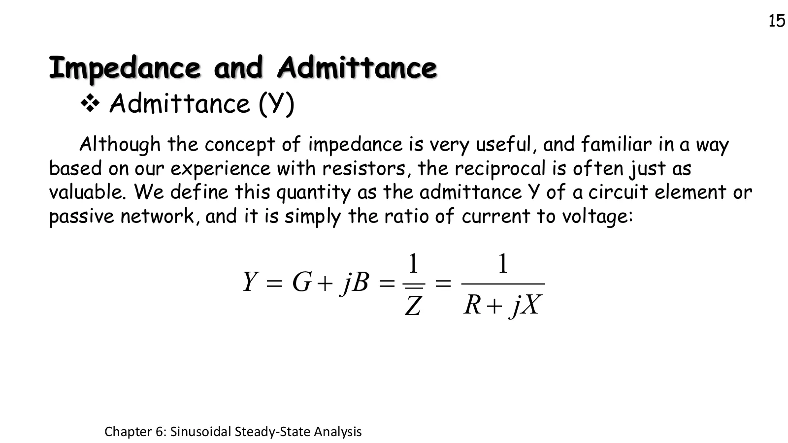
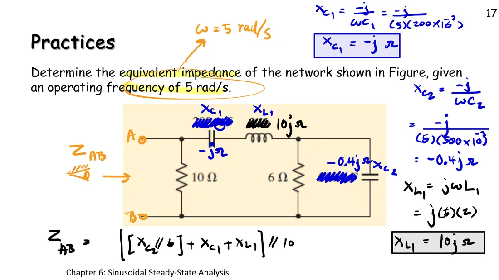
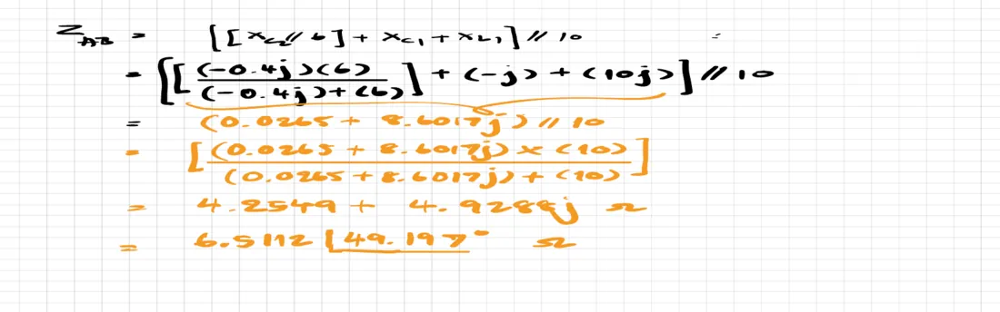
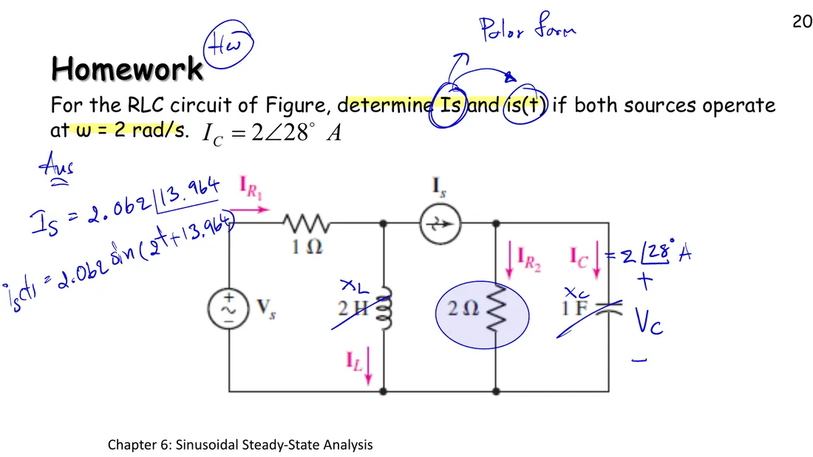

Page 6.3 showed that every element obeys \(\mathbf{V} = Z\mathbf{I}\). The impedance is the ratio of the voltage phasor to the current phasor (slide p. 14); peak or effective values give the same ratio. Kirchhoff's laws hold for phasors, so impedances combine exactly like resistances: series adds, parallel is product over sum, and mesh analysis from chapter 4 still works; only the arithmetic is complex. This page has a simulation of impedance and admittance (section A), two class practices and the homework, and extra practice (section B).
$$ \begin{aligned} Z &= \frac{\mathbf{V}}{\mathbf{I}} = R + jX \qquad Y = \frac{1}{Z} = G + jB \\ Z_{eq} &= Z_1 + Z_2 \qquad Z_1 \parallel Z_2 = \frac{Z_1 Z_2}{Z_1 + Z_2} \end{aligned} $$
Impedance \(Z = \mathbf{V}/\mathbf{I} = R + jX\), in ohms. The real part \(R\) is the resistance and the imaginary part \(X\) the reactance (\(X > 0\) inductive, \(X < 0\) capacitive).
Element impedances: \(Z_R = R\), \(Z_L = j\omega L\), \(Z_C = -j/(\omega C)\); convert every element at the source frequency before anything else.
Series: \(Z_1 + Z_2\) · parallel: \(Z_1Z_2/(Z_1 + Z_2)\), the same rules as for resistors; add in Cartesian form, multiply and divide in polar form.
Admittance \(Y = 1/Z = G + jB\), in siemens (S): \(G\) is the conductance and \(B\) the susceptance. Trap: \(G = R/(R^2 + X^2)\) is not \(1/R\) unless \(X = 0\).
Getting a time-domain answer: source → phasor, elements → impedances, solve with the methods of chapters 3–5, answer phasor → sinusoid.
A
อิมพีแดนซ์และแอดมิตแตนซ์บนระนาบเชิงซ้อน
Impedance and admittance on the complex plane
นิยามแอดมิตแตนซ์ในสไลด์หน้า 15
The admittance is defined on slide p. 15

สไลด์หน้า 15 · แตะรูปเพื่อขยายSlide p. 15 · tap to enlarge
An impedance \(Z = R + jX\) across a \(10\angle 0^\circ\) V source (at \(\omega = 1\) rad/s, so \(X > 0\) is drawn as an inductor and \(X < 0\) as a capacitor). The left plane is the impedance triangle: horizontal side \(R\), vertical side \(X\), hypotenuse \(|Z|\) at angle \(\theta_Z\). The right plane is \(Y = 1/Z\), with the reciprocal length and the opposite angle. Press the "3 + j4" example and compare \(G = 0.12\) S with \(1/R = 0.333\) S.
The simulation connects a \(1\angle 0^\circ\) V test source (grey, not part of the problem) to terminals A–B. Each step of the solution shrinks the circuit, and the test current does not change at any step, which shows that each smaller circuit really is equivalent. The group to be combined next glows pink.
ดูสไลด์หน้า 17 และกระดาษจดที่ผู้สอนเขียนในห้องSee slide p. 17 and the notes page as written in class

อิมพีแดนซ์ของอุปกรณ์ที่ 5 rad/s และลำดับการรวม \(Z_{AB} = [(X_{C2} \parallel 6) + X_{C1} + X_{L1}] \parallel 10\)The element impedances at 5 rad/s and the order of combination \(Z_{AB} = [(X_{C2} \parallel 6) + X_{C1} + X_{L1}] \parallel 10\)

\(Z_{AB} = 4.2549 + j4.9288\ \Omega = 6.5112\angle 49.197^\circ\ \Omega\) (ขนาด 6.5112 ต่างจากเฉลยที่นี่ 6.5113 เพราะการปัดเศษ)\(Z_{AB} = 4.2549 + j4.9288\ \Omega = 6.5112\angle 49.197^\circ\ \Omega\) (the size 6.5112 differs from 6.5113 here only by rounding)
2
หากระแส \(i(t)\) ในวงจร เมื่อ \(v_s(t) = 40\sin 3000t\) V
Find the current \(i(t)\) in the circuit, with \(v_s(t) = 40\sin 3000t\) V
The problem does not give \(V_s\). Slide \(V_s\) under the picture: the dots on the left change, but \(\mathbf{I}_s\), \(\mathbf{I}_{R2}\) and \(\mathbf{I}_C\) do not change at all, because the current source fixes the current in its own branch. So \(\mathbf{I}_C\) alone is enough to find \(\mathbf{I}_s\). The head-to-tail arrows of the last step are KCL, \(\mathbf{I}_s = \mathbf{I}_{R2} + \mathbf{I}_C\).
Watch the textbook: Hayt 8th edition, Example 10.5, writes \(\mathbf{I}_s = 1\angle{-62^\circ} + \tfrac12\angle{-62^\circ} = 1.5\angle{-62^\circ}\) A, which is wrong: the first term \(1\angle{-62^\circ}\) is the voltage \(\mathbf{V}_C\) (in volts), not the current \(\mathbf{I}_C\), and the two currents are not in phase: \(\mathbf{I}_C\) leads \(\mathbf{I}_{R2}\) by 90°. The correct answer is \(2.062\angle 13.96^\circ\) A, as worked in class.
ดูสไลด์หน้า 20 ที่ผู้สอนเขียนในห้องSee slide p. 20 as written in class

คำตอบในห้อง \(\mathbf{I}_s = 2.062\angle 13.964^\circ\) A และ \(i_s(t) = 2.062\sin(2t + 13.964^\circ)\) AThe class answer \(\mathbf{I}_s = 2.062\angle 13.964^\circ\) A and \(i_s(t) = 2.062\sin(2t + 13.964^\circ)\) A
In section A set X = 0: Z is real, \(Y = 1/R\), and current and voltage are in phase.
Set R = 0: Z points straight up (a pure inductor) and Y straight down; the reciprocal of \(j\) is \(-j\).
Drag X from positive to negative: Z crosses from the upper half to the lower half, and Y always crosses the other way.
Try this 2 — really equivalent?
In problem 1 press Next step one at a time: the test current \(0.1536\angle{-49.197^\circ}\) A never changes, although the circuit shrinks.
Hover over \(Z_b\) at step 3: its real part is tiny (0.0265 Ω), because 6 Ω in parallel with −j0.4 Ω is almost a pure capacitor.
In problem 2 hover over the inductor: its current is \(\mathbf{I}_1 - \mathbf{I}_2\); check it with the readings.
Try this 3 — the current source
In problem 3 slide \(V_s\) from 0 to 10 V: the currents on the right do not change, those on the left (\(\mathbf{I}_{R1}\), \(\mathbf{I}_L\)) do.
Look at the arrows of the last step: \(\mathbf{I}_{R2}\) and \(\mathbf{I}_C\) are perpendicular (90°), so the sum is \(\sqrt{0.5^2 + 2^2} = 2.062\) A long, by Pythagoras.
Question: what is \(\mathbf{I}_s\) if \(\omega\) is 1 rad/s instead (Hayt Practice 10.8)?
Chapter 6 slides, pp. 14–20 · in class, September 2023 · Hayt §10.5, Examples 10.5–10.7